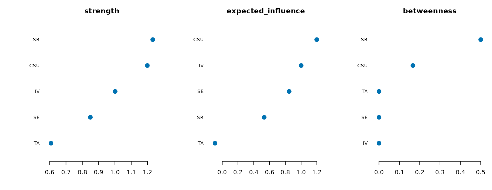
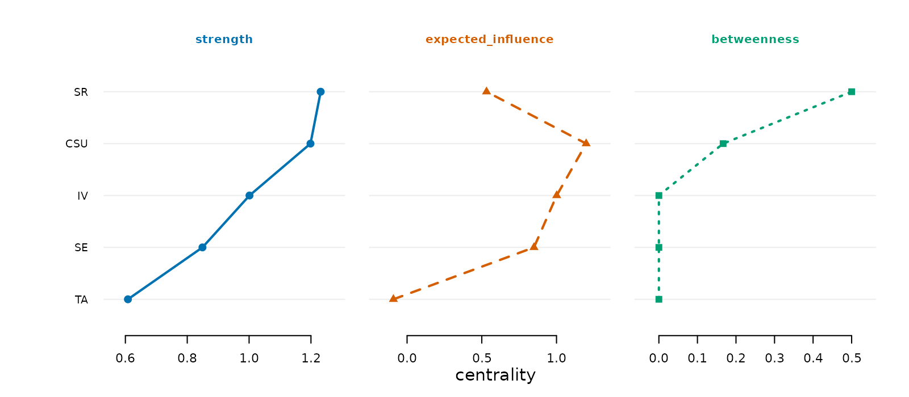
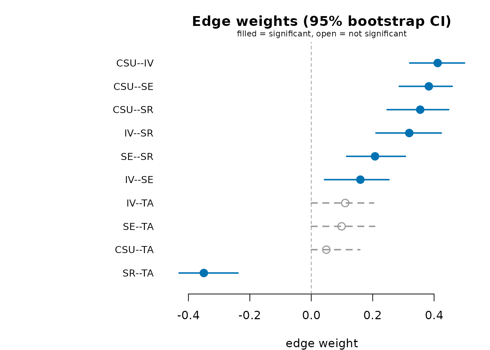
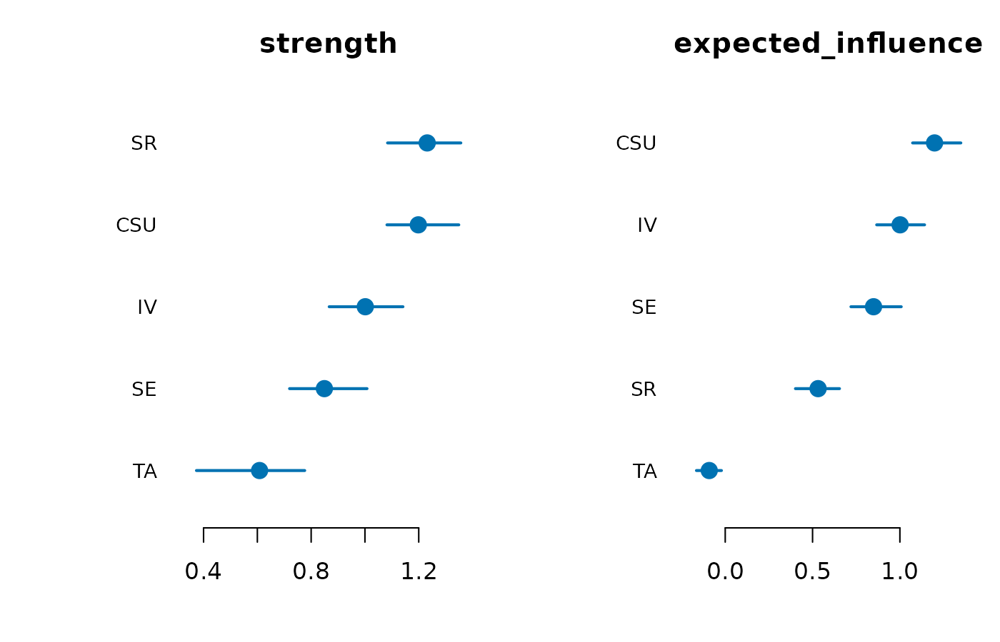
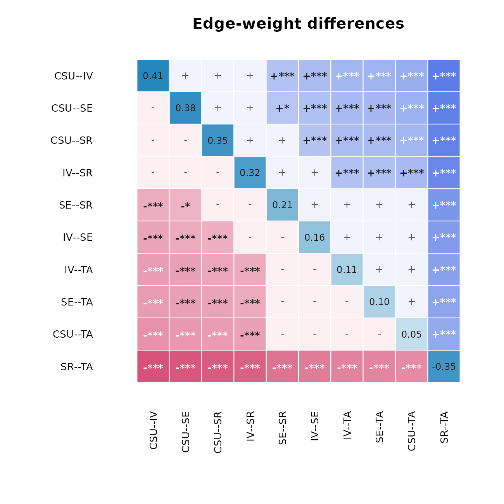
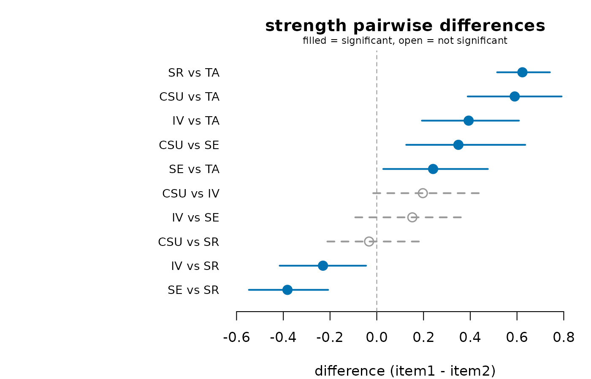
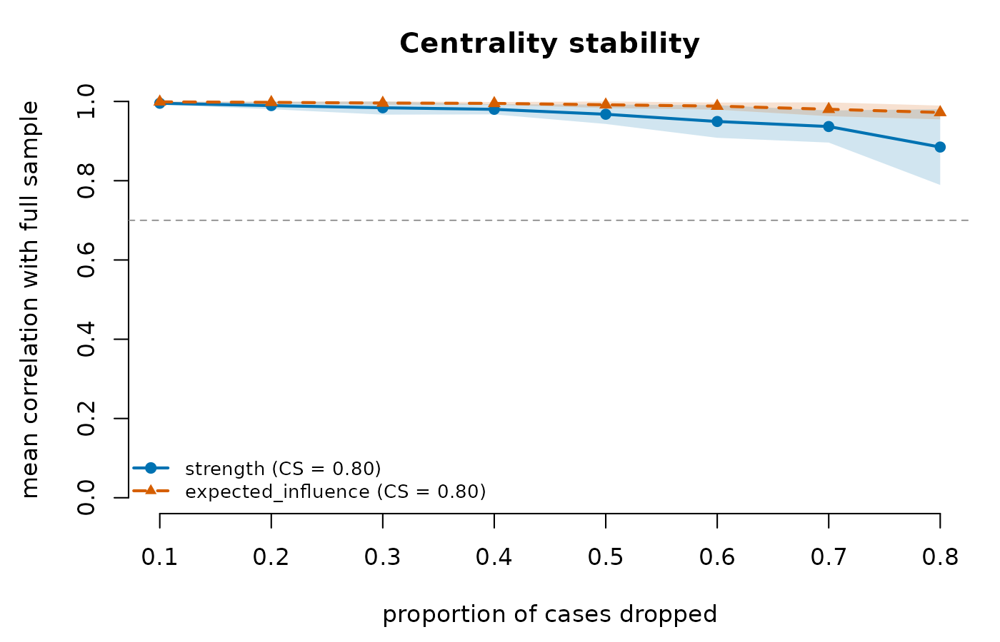
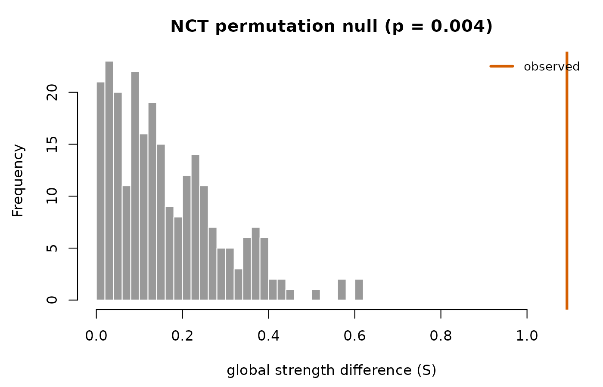
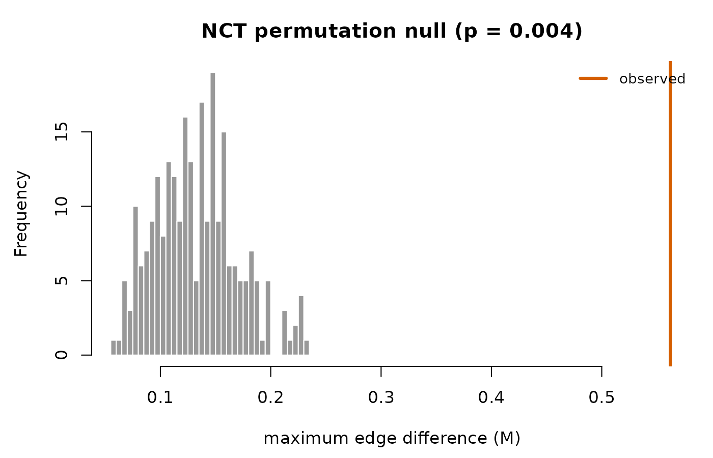
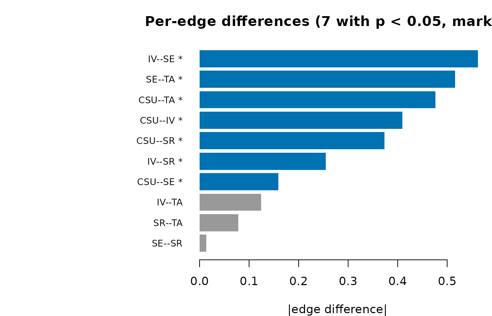

Visualizing centrality, bootstrap and comparison results with the psychnets R package
Mohammed Saqr
University of Eastern FinlandSonsoles López-Pernas
University of Eastern FinlandSource:
vignettes/articles/visualizing-networks.Rmd
visualizing-networks.RmdA network diagram may show a striking pattern, but how can researchers tell which edges are precise and which nodes are comparatively important? For questionnaire constructs such as motivation and self-regulated learning, nodes denote measured characteristics and edges can represent associations adjusted for the other variables. This focuses attention on relations among constructs rather than on separate predictors or outcomes (Borsboom et al., 2021). A diagram provides a useful overview, yet node placement and edge thickness alone cannot establish estimation precision or comparative prominence. Visualising centrality, bootstrap and comparison results adds information needed to interpret those features with appropriate care (Jones et al., 2018).
In education, network methods have been used to examine how learning processes are connected. Studies have considered the relations among monitoring events and phases of regulation during collaborative learning (Malmberg et al., 2022), as well as the temporal and relational dynamics of self-regulation in academic writing (Saqr et al., 2021). Network approaches can therefore help researchers investigate how cognitive, motivational and regulatory processes co-occur or develop together, without assuming that an observed association demonstrates a causal effect. Saqr et al. (2024) discuss their use for analysing complex learning processes and the methodological choices involved.
Interpreting a fitted network requires more than identifying its visually prominent edges. Centrality measures summarise different aspects of a node’s position, but their rankings may depend on the measure used. Bootstrap intervals provide information about estimation uncertainty, difference tests assess contrasts between edges or nodes, and case-dropping procedures examine how centrality estimates respond to changes in the sample (Epskamp et al., 2018). When networks are estimated for two groups, permutation tests can assess differences in overall structure, global strength and individual edges (van Borkulo et al., 2023). Clear figures, paired with numerical results and careful reporting, help distinguish descriptive patterns from findings supported by uncertainty assessments (Burger et al., 2023).
This article demonstrates how to visualise and interpret these
results using psychnets. It uses five self-regulated
learning constructs from model-generated questionnaire responses to
illustrate centrality bar and line plots, bootstrap intervals,
difference matrices and forest plots, case-dropping stability curves,
and network comparison plots. For each display, the emphasis is on what
is plotted, how to read it, and what the observed results justify. The
examples use the plot() method associated with each result
object; the printed tables provide the values needed for reporting.
Data
SRL_GPT contains 300 sets of model-generated responses
to the Motivated Strategies for Learning Questionnaire. Each row
contains construct scores on a scale from 1 to 7, rather than responses
from an individual student. The GPT responses were produced for a study
of how large language models answer psychological questionnaires
(Vogelsmeier et al., 2025). The accompanying SRL_Claude
data contain 300 responses generated by another model and are used for
the two-group comparison. These data illustrate the methods; their
associations should not be interpreted as evidence about a population of
learners.
-
Nodes:
CSU(cognitive strategy use),IV(intrinsic value),SE(self-efficacy),SR(self-regulation) andTA(test anxiety). - Observations: one row per generated response set; the data are complete.
head(SRL_GPT)
#> CSU IV SE SR TA
#> 1 5.307692 5.666667 5.777778 5.333333 4.00
#> 2 5.846154 6.444444 6.000000 5.777778 4.00
#> 3 6.615385 6.666667 6.222222 6.333333 3.25
#> 4 5.692308 6.555556 6.333333 5.555556 4.50
#> 5 4.384615 5.555556 4.888889 4.777778 4.00
#> 6 4.846154 5.444444 5.666667 5.111111 3.50ebic_glasso() fits the network used throughout the
single-group examples. It estimates a Gaussian graphical model in which
edges represent partial correlations, with regularisation selected using
the extended Bayesian information criterion. An edge therefore describes
a conditional association, not a causal relation.
fit <- ebic_glasso(SRL_GPT)
fit
#> <psychnet> glasso network
#> nodes: 5 edges: 10 (undirected)
#> lambda: 0.00861 gamma: 0.5
#> optimality (KKT residual): 2.21e-10The fitted network contains all 10 possible edges among the five constructs. The companion article on Gaussian graphical models discusses their interpretation; here the focus is on visualising the associated summaries and uncertainty estimates.
Which nodes are most central?
net_centralities() returns one row per node and a column
for each requested measure. Strength adds the absolute values of a
node’s edge weights, regardless of sign. Expected influence adds the
signed weights, so positive and negative associations can offset each
other. Betweenness describes the proportion of shortest paths between
other nodes that pass through the node. These measures answer related
but distinct questions, and none alone identifies a construct as a cause
or an intervention target.
ct <- net_centralities(fit,
measures = c("strength", "expected_influence",
"betweenness"))
ct
#> node strength expected_influence betweenness
#> 1 CSU 1.1984512 1.19845117 0.1666667
#> 2 IV 1.0012765 1.00127649 0.0000000
#> 3 SE 0.8492185 0.84921854 0.0000000
#> 4 SR 1.2314317 0.53172852 0.5000000
#> 5 TA 0.6082238 -0.09147935 0.0000000Self-regulation has the largest strength (1.231) and betweenness
(0.5), but its negative edge with test anxiety reduces its expected
influence to 0.532, below that of cognitive strategy use (1.198),
intrinsic value (1.001) and self-efficacy (0.849). Only cognitive
strategy use and self-regulation lie on shortest paths between other
nodes. plot() draws one panel per measure, with the nodes
sorted by value so that the most central node is at the top:
plot(ct)
The ordering changes across panels. Self-regulation ranks first for strength and betweenness, but fourth for expected influence. Thus, a claim that a node is the most central is incomplete unless the measure is specified. The bar plots describe the observed values; they do not by themselves show whether differences in rank are statistically distinguishable.
Do the nodes keep their position across measures?
With type = "line", each node is traced across the
measures while the nodes retain a common vertical ordering based on
their mean standardised centrality. Each panel initially uses the scale
of its own measure. Changes in a node’s position across panels make it
easier to identify measures on which that node is relatively prominent
or peripheral; the visual slope should not be treated as a numerical
difference between measures with different units.
plot(ct, type = "line")
The scale argument determines how the values are
displayed: "raw" (the default) retains the original values,
"z" standardises each measure to a mean of 0 and a standard
deviation of 1, and "relative" rescales each measure to the
range 0 to 1. Standardisation makes differences in relative position
easier to compare across the three measures, although it does not make
the measures conceptually interchangeable.
plot(ct, type = "line", scale = "z")
Self-regulation changes position markedly: it is highest on strength and betweenness but much lower on expected influence. Test anxiety has the lowest strength and expected influence. These profiles help explain why the choice of centrality measure affects the substantive description of the same network.
How precise are the edges?
net_boot() repeatedly resamples rows from the data and
re-estimates the network, retaining the resulting edge weights and
centrality values. Their percentile bootstrap intervals summarise
sampling uncertainty under this resampling procedure. More resamples are
preferable for a substantive analysis, often at least 1,000; the example
uses 250 to limit computation. Because these are model-generated
response sets, the resampling units here are rows of generated data
rather than human respondents.
set.seed(1)
bs <- net_boot(SRL_GPT, method = "glasso", n_boot = 250, cores = 1)
bs
#> <psychnet_bootstrap> glasso, 250 resamples, 95% CI
#> 10 edges (7 significant), 5 nodes, measures: strength, expected_influenceSeven of the 10 estimated edges have 95% bootstrap intervals that exclude zero. The default display places the observed edge weight beside its interval and sorts the edges by weight. Filled points and solid intervals identify those that exclude zero; open points and dashed intervals identify the others. Interval width indicates the precision of the estimate, while its position relative to zero shows whether that interval includes values of both signs.
plot(bs)
The intervals for the small positive associations between test anxiety and intrinsic value, self-efficacy, and cognitive strategy use include zero. By contrast, the negative association between self-regulation and test anxiety and the six positive associations among the other four learning constructs have intervals that exclude zero. This distinguishes uncertainty about individual edge weights from the mere presence of an edge in the fitted network.
How precise is each node’s centrality?
With type = "centrality", the plot displays the observed
centrality estimates and their bootstrap intervals, in separate panels
for strength and expected influence. It allows the reader to consider
the uncertainty around each estimate rather than relying only on its
position in the ranking.
plot(bs, type = "centrality")
as.data.frame(bs, what = "centrality")
#> node strength strength_lower strength_upper expected_influence
#> 1 CSU 1.1984512 1.0817999 1.3489871 1.19845117
#> 2 IV 1.0012765 0.8670417 1.1413809 1.00127649
#> 3 SE 0.8492185 0.7196350 1.0077951 0.84921854
#> 4 SR 1.2314317 1.0840409 1.3565767 0.53172852
#> 5 TA 0.6082238 0.3734560 0.7761419 -0.09147935
#> expected_influence_lower expected_influence_upper
#> 1 1.0726933 1.34898708
#> 2 0.8670417 1.14138092
#> 3 0.7196350 1.00779507
#> 4 0.4018903 0.65431683
#> 5 -0.1648691 -0.02151559The 95% strength intervals for cognitive strategy use (1.08 to 1.35) and self-regulation (1.08 to 1.36) overlap almost completely. Test anxiety has a lower observed strength, with an interval from 0.37 to 0.78. These displays suggest that the ordering of some nodes is uncertain, but overlap between separate intervals is not itself a formal test of a difference. The pairwise results below provide that assessment.
Which edges and nodes differ from one another?
With type = "edge_diff" or
type = "centrality_diff", a matrix compares pairs of edges
or centrality values. Items appear on both axes, ordered by their
observed estimates, and the diagonal shows those estimates. The
off-diagonal cells distinguish pairs with evidence of a difference from
pairs without it: red indicates a larger estimate in the row, blue a
smaller estimate, and faint cells indicate no detected difference. Stars
indicate levels of statistical significance. Reading across a row helps
identify which comparisons are supported, rather than treating the
entire rank order as certain.
plot(bs, type = "edge_diff")
plot(bs, type = "centrality_diff", measure = "strength")
The strength matrix shows which observed differences between nodes
are supported by the bootstrap comparisons. The corresponding
difference_test() table reports each pair’s values, the
observed difference, its interval, a p-value and a
significant flag. It also provides the numerical evidence
behind the coloured cells:
dt <- difference_test(bs, type = "strength")
dt
#> item1 item2 value1 value2 obs_diff lower upper p_value
#> 1 CSU IV 1.1984512 1.0012765 0.19717467 -0.01516075 0.43862886 0.080
#> 2 CSU SE 1.1984512 0.8492185 0.34923263 0.12605796 0.63527516 0.000
#> 3 IV SE 1.0012765 0.8492185 0.15205795 -0.09197932 0.36727209 0.208
#> 4 CSU SR 1.1984512 1.2314317 -0.03298049 -0.21134715 0.18144546 0.712
#> 5 IV SR 1.0012765 1.2314317 -0.23015517 -0.41550510 -0.04600301 0.024
#> 6 SE SR 0.8492185 1.2314317 -0.38221312 -0.54711539 -0.20825524 0.000
#> 7 CSU TA 1.1984512 0.6082238 0.59022738 0.38908973 0.79088205 0.000
#> 8 IV TA 1.0012765 0.6082238 0.39305270 0.19311698 0.60820843 0.000
#> 9 SE TA 0.8492185 0.6082238 0.24099475 0.02772224 0.47534139 0.016
#> 10 SR TA 1.2314317 0.6082238 0.62320787 0.51502542 0.74080956 0.000
#> significant
#> 1 FALSE
#> 2 TRUE
#> 3 FALSE
#> 4 FALSE
#> 5 TRUE
#> 6 TRUE
#> 7 TRUE
#> 8 TRUE
#> 9 TRUE
#> 10 TRUESeven of the 10 pairwise strength comparisons are flagged as significant. Test anxiety has lower strength than each of the other four nodes; self-regulation has higher strength than intrinsic value and self-efficacy; and cognitive strategy use has higher strength than self-efficacy. The remaining three comparisons are not significant: cognitive strategy use versus self-regulation (difference -0.033, p = 0.712), cognitive strategy use versus intrinsic value (p = 0.080), and intrinsic value versus self-efficacy (p = 0.208). The results support describing test anxiety as lowest in strength, but not identifying a uniquely highest-strength node.
Calling plot() on the difference-test table produces a
matrix by default (style = "box"). This is useful for
seeing which pairs show evidence of a difference at a
glance.
plot(dt)
With style = "forest", each comparison appears on a
separate row, showing the observed difference and its interval against a
dashed reference line at zero. Comparisons whose intervals exclude zero
are emphasised. Unlike the matrix, the forest plot also conveys the
magnitude and direction of the observed differences, together
with their uncertainty.
plot(dt, style = "forest")
Is the centrality order stable when cases are dropped?
net_stability() evaluates how centrality estimates
change when progressively larger proportions of cases are omitted. For
each subset, the network is re-estimated and its centrality values are
correlated with those from the full data. The correlation-stability (CS)
coefficient summarises the largest proportion of cases that can be
dropped while a correlation of at least 0.7 is retained in at least 95%
of the subsets. It assesses the robustness of centrality estimates to
case deletion, not the precision of individual edges.
st <- net_stability(SRL_GPT, method = "glasso",
drop_prop = seq(0.1, 0.8, 0.1), iter = 25)
st
#> <psychnet_stability> glasso, 25 subsets/proportion
#> CS-coefficient (pearson cor > 0.70 in > 95% of subsets):
#> strength 0.80
#> expected_influence 0.80The reported CS-coefficient is 0.80 for both strength and expected influence, above the recommended value of 0.5 (Epskamp et al., 2018). This is the highest drop proportion examined here, so the result should not be extrapolated to larger omissions. The plot shows the proportion dropped on the horizontal axis and the mean correlation with the full-sample centrality values on the vertical axis. Each measure has a line with a band representing one standard deviation, alongside a dashed threshold. Correlations that remain high as more rows are removed indicate comparatively stable centrality estimates in this example; the calculation uses only 25 subsets per proportion.
plot(st)
Do the networks of two groups differ?
net_compare() implements a permutation-based network
comparison test (van Borkulo et al., 2023). The procedure repeatedly
shuffles group membership and re-estimates the two networks, providing
reference distributions for the observed group differences. The network
structure statistic, M, is the largest absolute difference between
corresponding edge weights. The global strength statistic, S, measures
the absolute difference between the groups’ sums of absolute edge
weights. The procedure also tests individual edges. Here the groups
comprise GPT-generated and Claude-generated responses, not samples of
students.
cmp <- net_compare(SRL_GPT, SRL_Claude, iter = 250)
summary(cmp)
#> test statistic observed p_value significant
#> 1 network structure M 0.562165 0.003984064 TRUE
#> 2 global strength S 1.092696 0.003984064 TRUEBoth global tests are significant at the conventional 0.05 level (p = 0.004 for both). The largest absolute edge difference is 0.562. The sum of absolute edge weights is 1.093 greater in the Claude-response network (3.537 versus 2.444). The default plot shows the permutation distribution of S, with the observed statistic indicated and its p-value in the title. An observed value well into the tail suggests that the group difference is unusual under random reassignment.
plot(cmp)
The observed global strength difference is approximately 1.09, to the right of the displayed permutation distribution, whose upper end is around 0.6. This visualises the small permutation p-value; it does not identify which edges account for the difference.
With type = "structure", the same display is produced
for M, the largest absolute edge difference. It assesses whether the
most pronounced edge-level discrepancy is unusually large under
permutation.
plot(cmp, type = "structure")
With type = "edges", a bar represents the observed
absolute difference for each corresponding edge. Colour indicates
whether the edge comparison is significant at alpha, and
the title reports how many edges meet that criterion. The plot therefore
complements the two global tests with a view of where the differences
occur.
plot(cmp, type = "edges")
The underlying table gives the weight of each edge in both networks, the absolute difference, its permutation p-value and the significance indicator:
as.data.frame(cmp)
#> from to weight_1 weight_2 difference p_value p_raw
#> 1 CSU IV 0.41166866 0.001744267 0.40992440 0.003984064 0.003984064
#> 2 CSU SE 0.38290223 0.223973564 0.15892867 0.007968127 0.007968127
#> 3 IV SE 0.15992605 -0.402239002 0.56216505 0.003984064 0.003984064
#> 4 CSU SR 0.35481359 0.728177591 0.37336401 0.003984064 0.003984064
#> 5 IV SR 0.31909443 0.574170376 0.25507595 0.003984064 0.003984064
#> 6 SE SR 0.20767208 0.221496430 0.01382435 0.884462151 0.884462151
#> 7 CSU TA 0.04906668 0.525584044 0.47651736 0.003984064 0.003984064
#> 8 IV TA 0.11058735 -0.013854928 0.12444228 0.131474104 0.131474104
#> 9 SE TA 0.09871818 -0.417575459 0.51629364 0.003984064 0.003984064
#> 10 SR TA -0.34985157 -0.428181457 0.07832989 0.350597610 0.350597610
#> significant
#> 1 TRUE
#> 2 TRUE
#> 3 TRUE
#> 4 TRUE
#> 5 TRUE
#> 6 FALSE
#> 7 TRUE
#> 8 FALSE
#> 9 TRUE
#> 10 FALSESeven of the 10 individual edge comparisons are significant. The
three largest absolute differences are IV–SE
(0.160 in GPT versus -0.402 in Claude), SE–TA
(0.099 versus -0.418) and CSU–TA (0.049 versus
0.526). The first two change sign, whereas the third remains positive
but is substantially larger in the Claude-response network. The
comparisons indicate different patterns in these generated response
sets, not necessarily differences between human learner populations.
Summary of the plot methods
| Result (verb) |
plot() options |
Question |
|---|---|---|
net_centralities() |
type = "bar" / "line";
scale = "raw" / "z" /
"relative"
|
Which nodes are central, on which measure? |
net_boot() |
type = "edges" / "centrality" /
"edge_diff" / "centrality_diff" /
"predictability"
|
How precise are edges and centralities, and which differ? |
difference_test() |
style = "box" / "forest"
|
Which pairs differ, and by how much? |
net_stability() |
one figure | Is the centrality order stable when cases are dropped? |
net_compare() |
type = "strength" / "structure" /
"edges"
|
Do two networks differ? |
Each display should be interpreted alongside its underlying numerical
results, obtained from the corresponding result object or
as.data.frame(). In particular, observed rankings should be
distinguished from tested pairwise differences, and global group
differences from edge-specific findings. The network itself can be drawn
with plot(fit), which uses the cograph package
and is covered in the article Visualizing networks with
cograph.
How to cite this article
Saqr, M., & López-Pernas, S. (2026). Visualizing centrality, bootstrap and comparison results with the psychnets R package. psychnets. https://doi.org/10.5281/zenodo.24569506 · HTML · PDF
References
Borsboom, D., Deserno, M. K., Rhemtulla, M., Epskamp, S., Fried, E. I., McNally, R. J., Robinaugh, D. J., Perugini, M., Dalege, J., Costantini, G., Isvoranu, A.-M., Wysocki, A. C., van Borkulo, C. D., van Bork, R., & Waldorp, L. J. (2021). Network analysis of multivariate data in psychological science. Nature Reviews Methods Primers, 1, 58. doi:10.1038/s43586-021-00055-w
Burger, J., Isvoranu, A.-M., Lunansky, G., Haslbeck, J. M. B., Epskamp, S., Hoekstra, R. H. A., Fried, E. I., Borsboom, D., & Blanken, T. F. (2023). Reporting standards for psychological network analyses in cross-sectional data. Psychological Methods, 28(4), 806-824. doi:10.1037/met0000471
Epskamp, S., Borsboom, D., & Fried, E. I. (2018). Estimating psychological networks and their accuracy: A tutorial paper. Behavior Research Methods, 50(1), 195-212. doi:10.3758/s13428-017-0862-1
Jones, P. J., Mair, P., & McNally, R. J. (2018). Visualizing psychological networks: A tutorial in R. Frontiers in Psychology, 9, 1742. doi:10.3389/fpsyg.2018.01742
Malmberg, J., Saqr, M., Järvenoja, H., & Järvelä, S. (2022). How the monitoring events of individual students are associated with phases of regulation: A network analysis approach. Journal of Learning Analytics, 9(1), 77-92. doi:10.18608/jla.2022.7429
Saqr, M., Beck, E., & López-Pernas, S. (2024). Psychological networks: A modern approach to analysis of learning and complex learning processes. In M. Saqr & S. López-Pernas (Eds.), Learning analytics methods and tutorials: A practical guide using R (pp. 639-671). Springer. doi:10.1007/978-3-031-54464-4_19
Saqr, M., Peeters, W., & Viberg, O. (2021). The relational, co-temporal, contemporaneous, and longitudinal dynamics of self-regulation for academic writing. Research and Practice in Technology Enhanced Learning, 16, 29. doi:10.1186/s41039-021-00175-7
van Borkulo, C. D., van Bork, R., Boschloo, L., Kossakowski, J. J., Tio, P., Schoevers, R. A., Borsboom, D., & Waldorp, L. J. (2023). Comparing network structures on three aspects: A permutation test. Psychological Methods, 28(6), 1273-1285. doi:10.1037/met0000476
Vogelsmeier, L. V. D. E., Oliveira, E., Misiejuk, K., López-Pernas, S., & Saqr, M. (2025). Delving into the psychology of machines: Exploring the structure of self-regulated learning via LLM-generated survey responses. Computers in Human Behavior, 173, 108769. doi:10.1016/j.chb.2025.108769